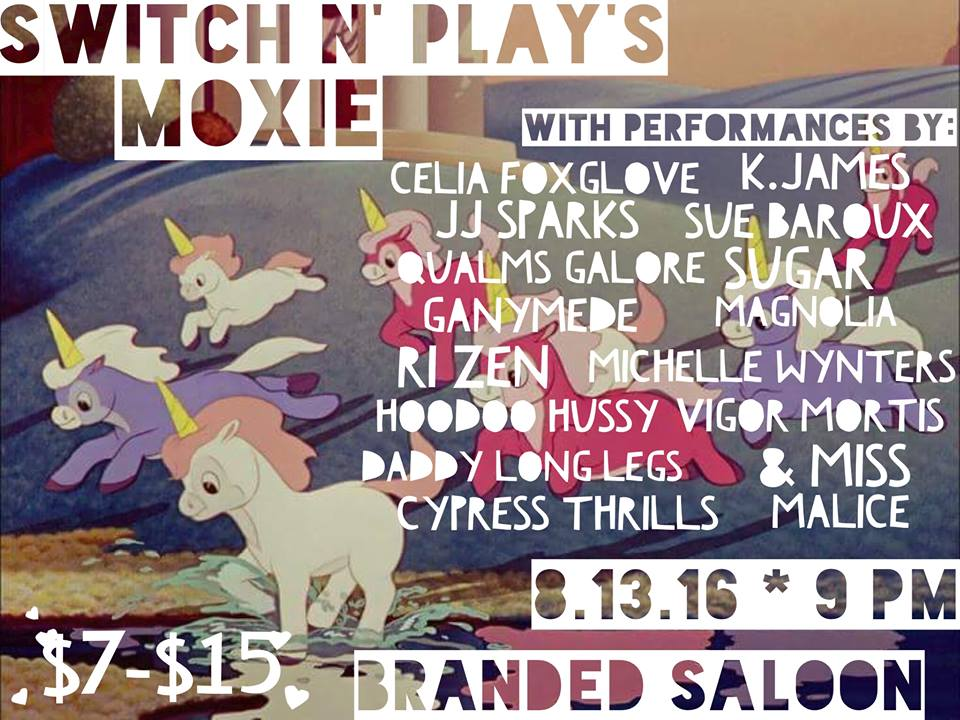

Brooklyn's Premiere Drag Collective
See Switch n' Play in Brooklyn!
Switch N' Play currently produces a bi-monthly drag and burlesque show at
Branded Saloon in Prospect Heights on every 2nd and 4th Saturday of the month.
Upcoming Shows at Branded Saloon
2nd Saturday of the Month

4th Saturday of the Month